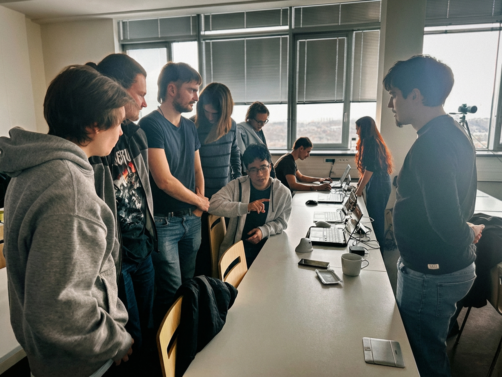
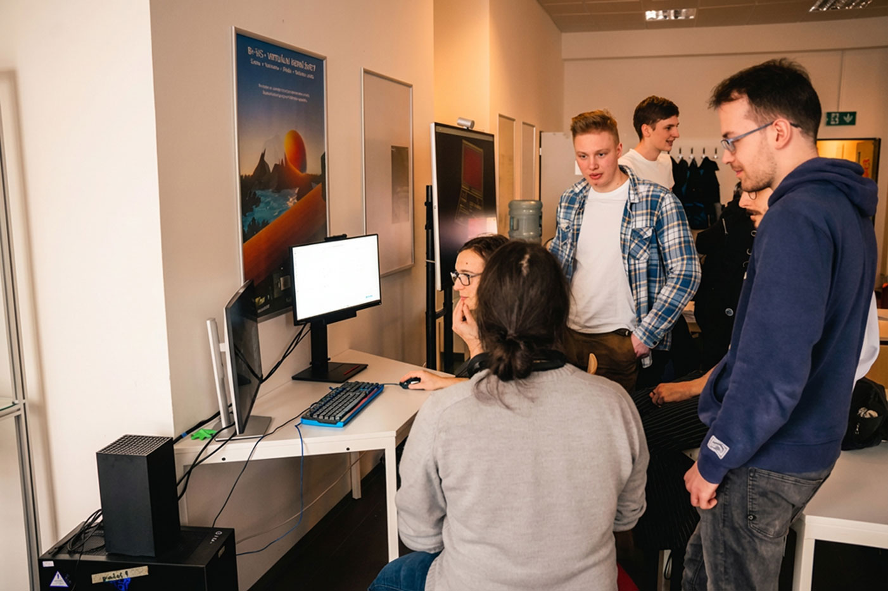

GRAFIT · FIT ČVUT
GRAFIT · FIT ČVUT
2026
Nejnovější ročníkGEXPO 2026
Studentské projekty, hry, VR a závěrečné práce. Součástí programu byl také host z Bohemia Interactive.
16 fotografiívidea a programBohemia Interactive
Otevřít ročník 2026 →Grafické EXPO představuje studentské projekty na pomezí počítačové grafiky, herního vývoje, VR a závěrečných prací. Vyberte si ročník a prohlédněte si program, ukázky i fotogalerii.
Jedna přehlídka, různé ročníky a stále širší prostor pro studentskou tvorbu.
Každý ročník má vlastní program, videa, fotografie a kontext. Obsah zůstává zachovaný na původních stránkách, rozcestník sjednocuje jejich vstup a vzhled.

Studentské projekty, hry, VR a závěrečné práce. Součástí programu byl také host z Bohemia Interactive.

První ročník společné přehlídky studentských her, VR, vizualizací a dalších grafických projektů.
Studentské hry, herní prototypy a experimenty s interaktivními světy.
Virtuální realita, vizualizace, modely a práce s herními enginy.
Výsledky bakalářských a diplomových projektů prezentované živě.